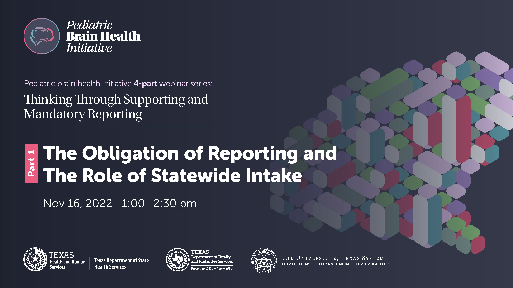

Pediatric brain health initiative 4-part webinar series:
Thinking Through Supporting and Mandatory Reporting
PART 1:
The Obligation of Reporting and The Role of Statewide Intake
Nov 16, 2022 | 1:00–2:30 pm
REGISTER NOW FOR PART 1
